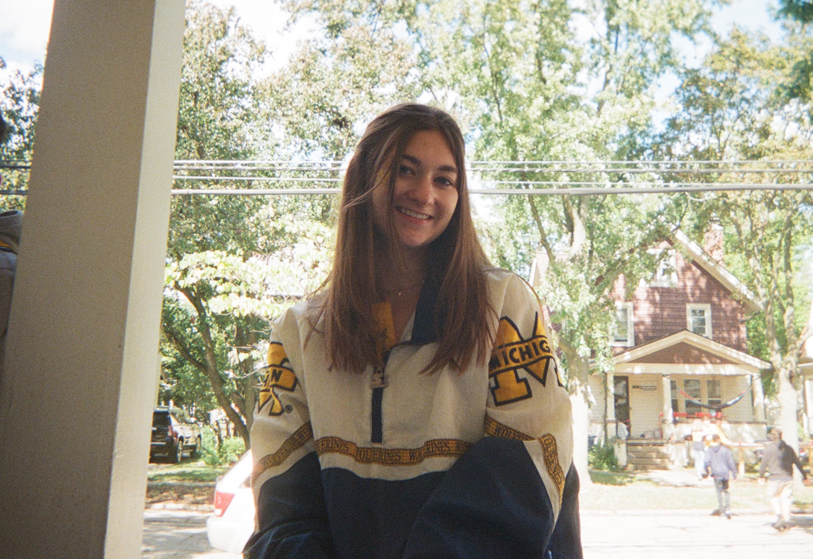

About
Michigan College thrifts started as a passion project with a purpose, to educate others about the detrimental impacts that the fast fashion indsutry has on the envrionemnt. Through our process of sourcing clothing second hand, we try to combat the idea that one needs new clothes to be fashionable and trendy. We provide fashionable, trendy, and affordable clothing for colleges in Michigan to encourage others to think about their consumption and take on a more sustainable lifestyle.
Behind the Brand
Abby Williams
Co-owner and Co-founder
Abby is a junior studying information and sustainability at the University of Michigan. She is passionate about the intersection between the environment and business in the fashion and tech industries and hopes to pursue a career intersecting the relams of business, sustainability, and tech. In her free time, she likes to play golf, watch sunsets, and spend time outdoors.

Andrea Johnson
Co-owner & Co-founder
Andrea is a junior studying business and public policy at the University of Michigan. She is interested in how policy, investors, and consumers inspire change within corporations toward a more sustainable future. Her plan is to attend law school to eventually pursue a career in corporate law. Outside of school, Andrea enjoys playing golf, volunterring at a rescue horse barn, and playing piano.